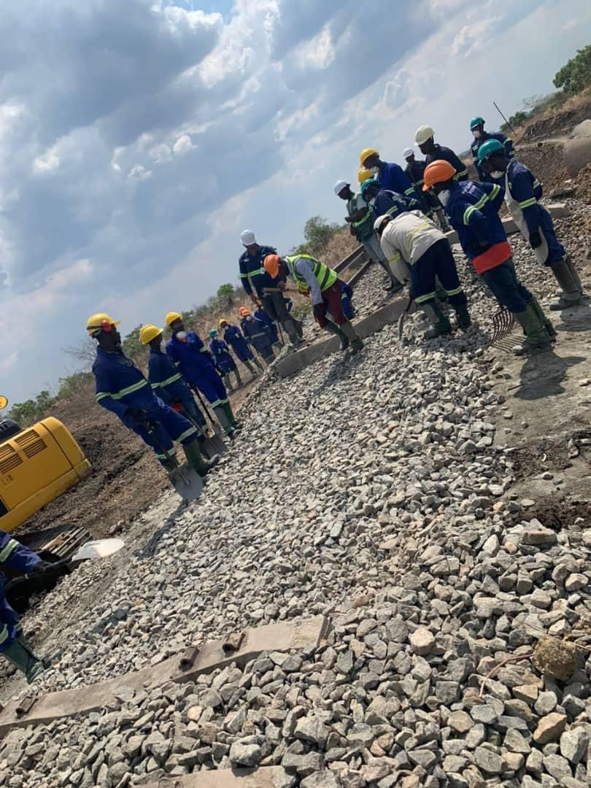
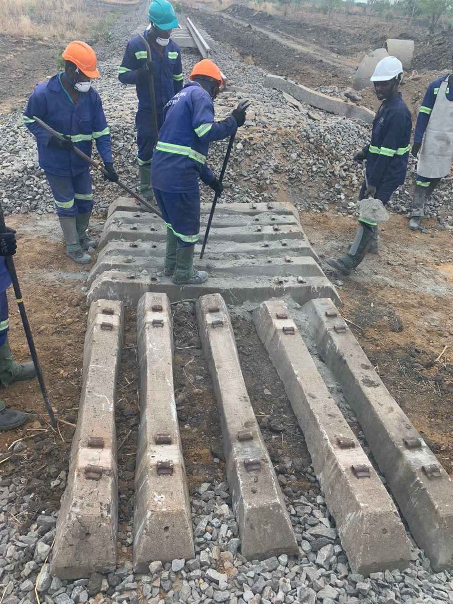
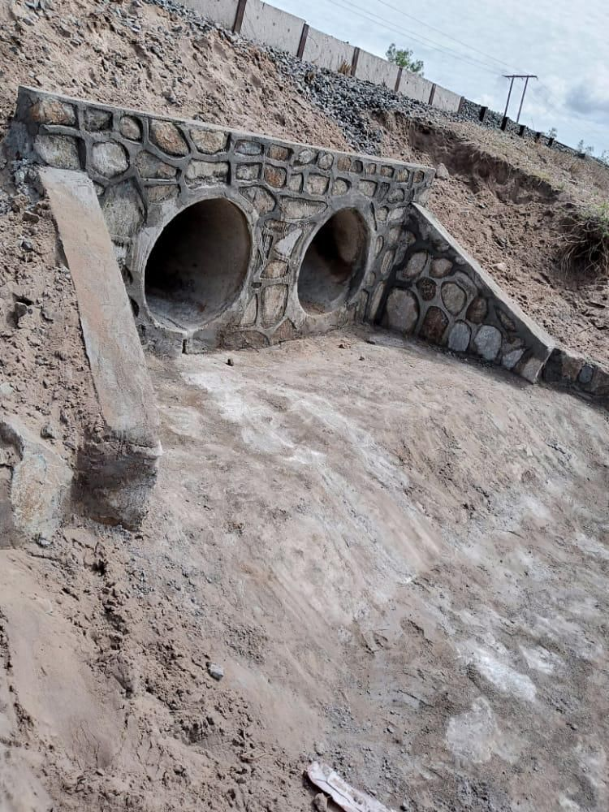
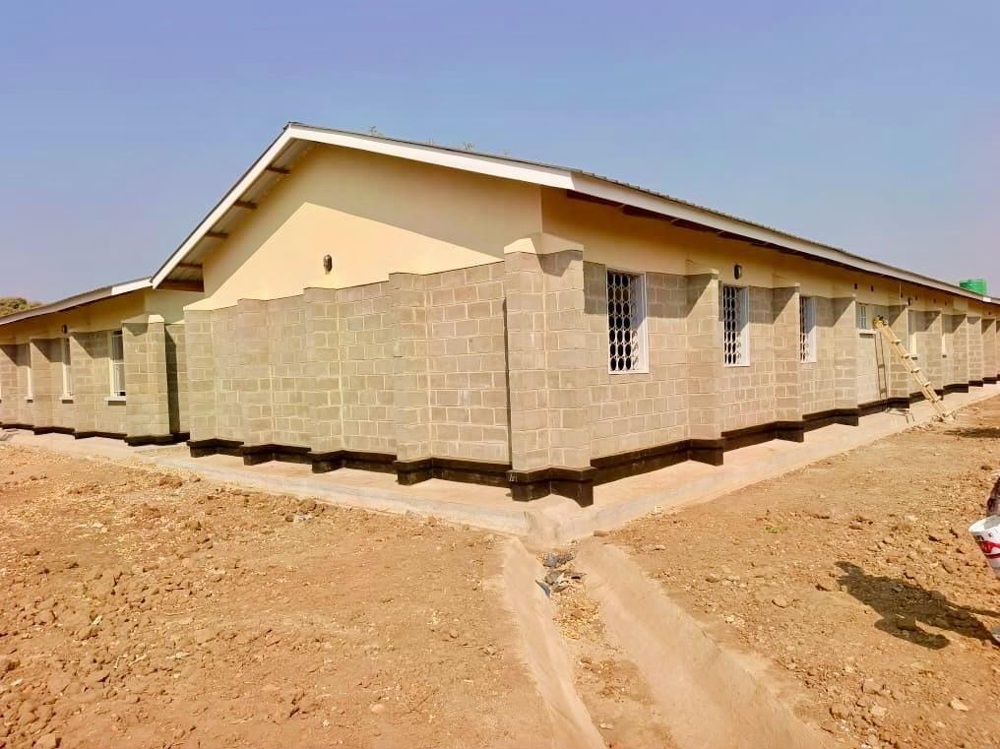
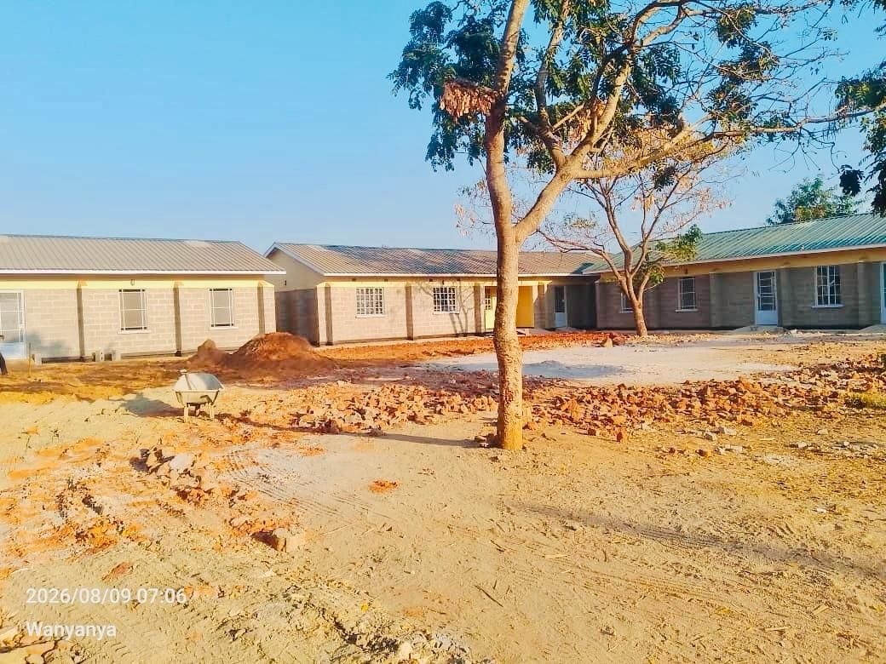
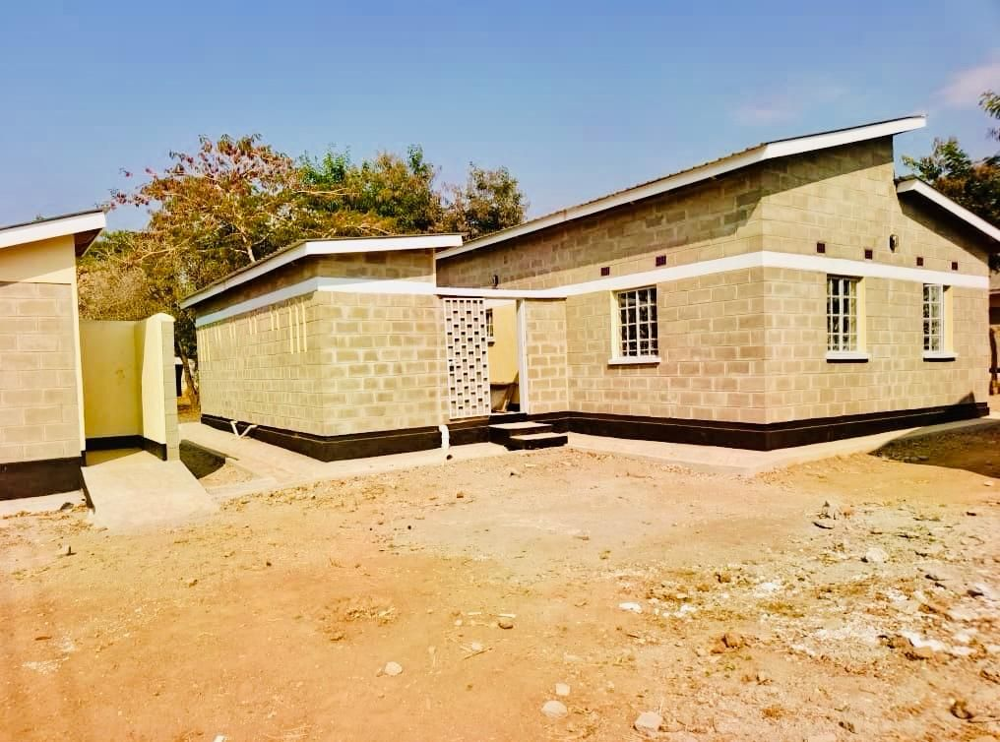
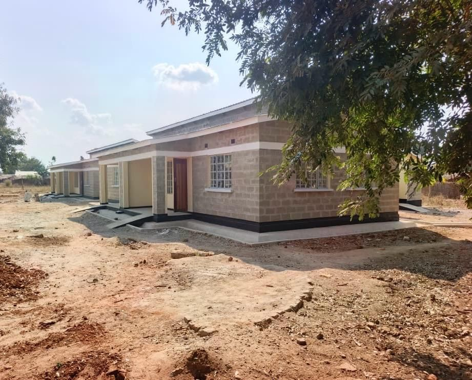
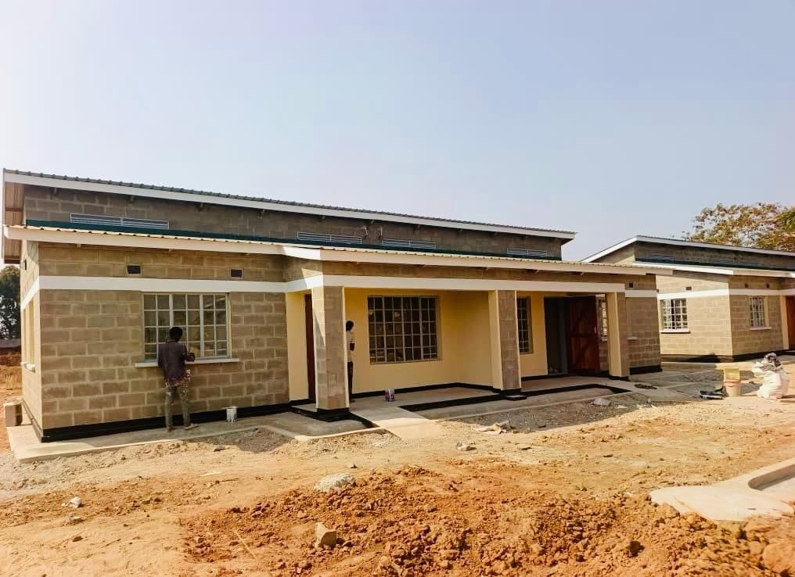
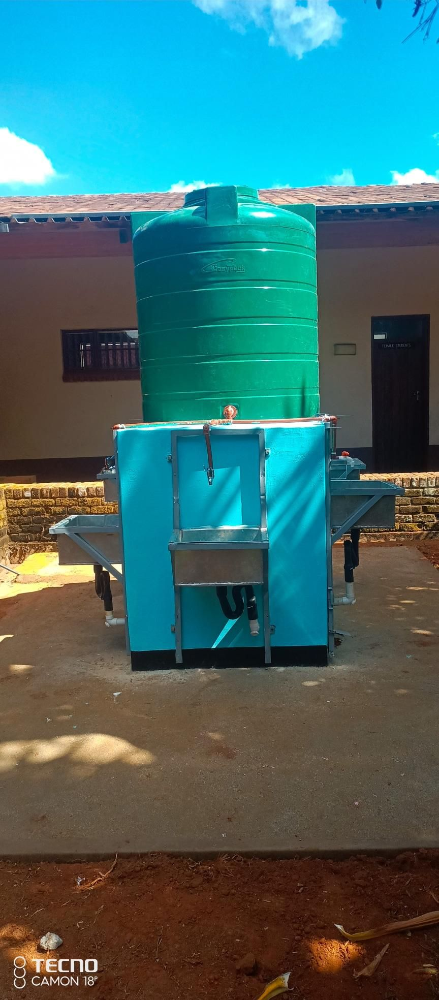
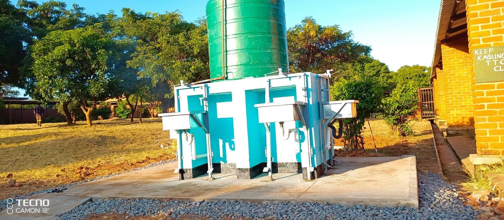

Projects & Track Record
Our Work
Signature Project
Rail Plan Works, Section 3 & 5, for Central East African Railways and Nacala Logistics.
PLMB’s largest completed contract to date: excavation, concrete works, backfilling, rail line cutting and refixing, and full drainage works along two sections of Malawi’s rail corridor, delivered over a thirty-month programme for one of the region’s principal logistics operators.



Selected Completed Contracts
Work performed over the last five years.
| Project | Client | Value (MK) | Status |
|---|---|---|---|
| Kaombe Primary SchoolSchool blocks, teacher houses, kitchen & latrines | Nkhotakota District Council | 1,509,898,774 | Practical completion, Jul 2026 |
| Rail Plan Works, Section 3 & 5Civil and rail line works | Central East African Railways | 1,211,416,115 | Completed Jun 2024 |
| Gratitude Hostels, Lot 1Maintenance and extension | Gratitude Hostels | 788,138,052 | Completed Feb 2022 |
| Gratitude Hostels, Lot 2Rehabilitation and extension | Gratitude Hostels | 651,177,042 | Completed Oct 2023 |
| Gomadzi Primary SchoolSemi-detached houses & classroom block | Nkhotakota District Council | 589,254,310 | Completed Jul 2024 |
| Student Shades & Admin OfficesGratitude Hostels, Nguludi Campus | Gratitude Hostels | 571,188,042 | Completed Aug 2023 |
| Water Supply RehabilitationDedza and Mchinji Districts | WaterAid Malawi | 126,720,137 | Completed Feb 2023 |
All values are certified contract sums drawn from signed completion or taking-over certificates on file. Selected from a broader portfolio that also includes the Malawi Revenue Authority, Malawi Legal Aid Bureau, TEVETA and AMREF Health Africa.


Current Major Works, In Progress
Government housing, at national scale.
PLMB is delivering staff housing for the Malawi Police Service in joint venture with Destiny Construction, under two contracts awarded by the Ministry of Lands, Housing and Urban Development.
| Lot | Scope | Location | Contract Sum (MK) |
|---|---|---|---|
| Lot 32013/L/PH/SH4SI/32 | Twelve staff houses for security institutions | Chitala & Sengabay, Salima | 2,639,678,965 |
| Lot 40013/L/PH/SH4SI/40 | Sixteen staff houses for security institutions | Thete & Lobi, Dedza | 4,016,147,154 |



Nationwide Footprint
Where we have built.
From rail corridor works in Blantyre to staff housing in Salima and Dedza, school infrastructure in Nkhotakota, and WASH programmes across the Central and Southern Regions.
Water & Sanitation Impact
Clean water, programme by programme.
A trusted delivery partner for WaterAid Malawi, Water For People and AMREF Health Africa, building water supply systems, sanitation blocks and hand-washing facilities in health centres, schools and colleges.


Trusted By